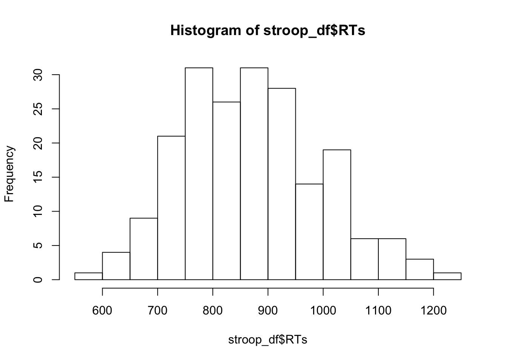
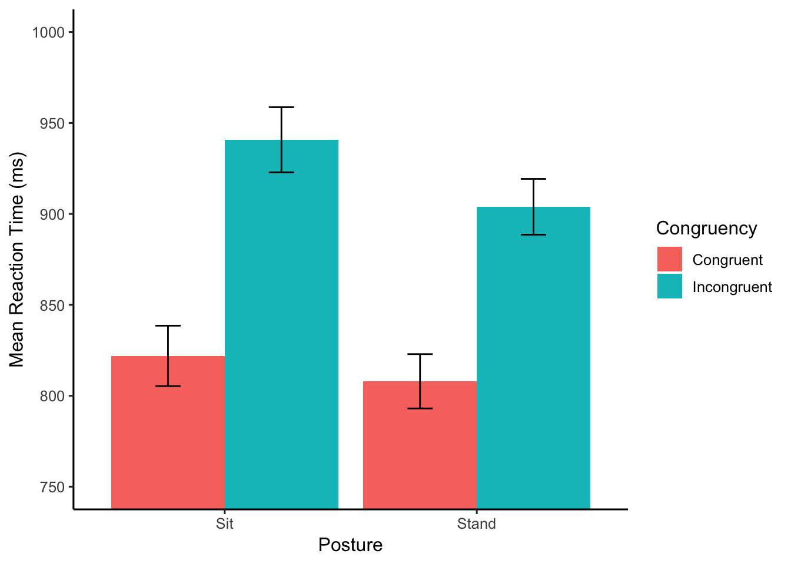

Chapter 5 Data-Wrangling
5.1 What is Data-wrangling
Data-wrangling is the general process of organizing and transforming data into various formats. For example, loading data into R, pre-processing it to get rid of things you don’t want and keep the things you want, add new things you might want that, arranging the data in different ways to accomplish different kinds of tasks, grouping the data, and summarizing the data, are all common data-wrangling activities. Real-world data often has many imperfections, so data-wrangling is necessary to get the data into a state that is readily analyzable.
We will mainly go over the dplyr package, which has a number of fantastic and relatively easy to use tools for data-wrangling. At the same time, it worth developigng your basic programming skills (using loops and logic), as they are also indispensable for solving unusual data-wrangling problems.
5.2 dplyr basics
- Dplyr reference
- Hadley Wickham’s, R for Data Science, Chapter 5 Data transformation
- Data import Cheatsheet
library(dplyr) #load the package (make sure it is installed first)
df <- starwars # dplyr comes with a data.frame called starwarsTake a look at that data in df, what do you see? It lists various characters from starwars, along with many columns that code for different properties of each character
5.3 basic dataframe stuff without dplyr
# addressing specific columns
df$name
df$height
df$mass
# addressing columns and rows without names
df[1,] # row 1
df[,1] # column 1
df[1:4,] # all of the data in rows 1:4
df[,4:5] # all of the data in columns 4:5
df[1:3,6:7] # the data in rows 1 to 3, for column 6 and 7 only
# finding a row(s) with specific info
df[df$name=="Luke Skywalker",]
df[df$height > 180,]
df[df$height < 180 & df$height > 70,]
#replace a particular value
df[1,2] <- 173 #changes the cell in row 1 column 2
# size of dataframe
dim(df) #c(number of rows, number of columns)
# cbind to add a column to a data.frame
df <- cbind(df, random_number=runif(dim(df)[1],0,1))
# rbind to add rows
# this creates a new data frame, binding together the rows 1-2, and 5-6
# note: all of the columns need to be the same
new_df <- rbind(df[1:2,],df[5:6,])
# convert a character vector to a factor
df$species <- as.factor(df$species)
levels(df$species)
levels(df$species)[3] <- "hello" # renames the third level, which get's applied to all listings in the df5.4 A couple questions:
- What are the names of all the characters who are taller than 80, shorter than 140, and are female?
df[df$height > 80 &
df$height < 170 &
df$gender == "female", ]$name- How many characters have Tatooine for their homeworld?
df[df$homeworld=="Tatooine",]
dim(df[df$homeworld=="Tatooine",])[1] # counts the NAs
tatooine <- df[df$homeworld=="Tatooine",]
tatooine[is.na(tatooine$name)==FALSE,]
dim(tatooine[is.na(tatooine$name)==FALSE,])[1]5.5 dplyr style
We now look at dplyr and pipes. The idea here is that we start with a dataframe, then systematically transform one step at a time. At each step we pass the data in it’s new state to the next step. The passing is called piping the data. There is a special operator for this %>%
5.5.1 quick example
We start with the entire dataframe df. Then we select only the rows where the height is taller than 100. Then we group by homeworld, and compute the mean birth year. What we get is a new data.frame, showing the mean birth years for each homeworld.
This is a common refrain:
Dataframe %>% filter %>% group_by %>% summarise
library(dplyr)
new_df <- df %>%
filter(height > 100) %>%
group_by(homeworld) %>%
summarise(mean_birth_year = mean(birth_year,na.rm=TRUE))5.5.2 filter
We can filter the data by properties of particular columns
# make a new dataframe that only include rows where the height is greater than 120
new_df <- df %>%
filter(height > 120)
# multiple filters are seperated by a comma
new_df <- df %>%
filter(height > 120,
height < 180,
birth_year > 20)
# more examples of differen logical operators
new_df <- df %>%
filter(gender == "male") # == equals identity (same as)
new_df <- df %>%
filter(gender != "male") # != not equal to
new_df <- df %>%
filter(eye_color %in% c("blue","yellow") == TRUE) # looks for matches to blue and yellow
# <= less than or equal to
# >= greater than or equal to
new_df <- df %>%
filter(height >= 120,
height <= 180)
new_df <- df %>%
filter(height > 120 & height < 180) # & AND
new_df <- df %>%
filter(skin_color == "fair" | skin_color == "gold") # | OR5.5.3 group_by and summarise
group_by() let’s us grab parts of the data based on the levels in the column
summarise() applies a function to each of the groups that are created
# counts the number of names, for each hair color
new_df <- df %>%
group_by(hair_color) %>%
summarise(counts=length(name))
# counts names, for each combination of hair and eye color
new_df <- df %>%
group_by(hair_color,eye_color) %>%
summarise(counts=length(name))5.5.4 focus on summarise
summarise is very powerful. Using summarise we can apply any function we want to each of the groups. This includes intrinsic R functions, and functions of our own design. And, we can add as many as we want. What we get back are new dataframes with columns for each group, and new columns with variables containing the data we want from the analysis
new_df <- df %>%
group_by(hair_color,eye_color) %>%
summarise(mean_years = mean(birth_year,na.rm=TRUE),
sd_years = sd(birth_year,na.rm=TRUE),
counts = length(name))5.5.5 Mutate
Use mutate to change or add a column
# change numbers in the height column by subtracting 100
new_df <- df %>%
mutate(height=height-100)
# make a new column dividing height by mass
new_df <- df %>%
mutate(hm_ratio = height/mass)5.5.6 Select
Use select to select columns of interest and return a dataframe only with those columns
new_df <- df %>%
select(name,height,mass)5.5.7 Star wars questions and answers
- use dplyr to find how many movies each character appeared in. Return a table that lists the names, and the number of films
# two ways to do the same thing
new_df <- df %>%
select(name,films) %>%
group_by(name) %>%
mutate(films = length(unlist(films)))
new_df <- df %>%
select(name,films) %>%
group_by(name) %>%
summarise(films = length(unlist(films)))- How many characters are in each movie?
- dplyr isn’t always necessary for every question
table(unlist(df$films))##
## A New Hope Attack of the Clones Return of the Jedi
## 18 40 20
## Revenge of the Sith The Empire Strikes Back The Force Awakens
## 34 16 11
## The Phantom Menace
## 34- What is the mean height and mass of characters with blue eyes?
new_df <- df %>%
filter(eye_color=="blue") %>%
summarise(mean_height = mean(height,na.rm=TRUE),
mean_mass = mean(mass,na.rm=TRUE))5.6 Data input
Before we wrangle with data, we need to get it into R. There are many ways to do that.
All of the following examples assume you have a data folder in your workspace that contains all the data files we will be using. Download this .zip file https://github.com/CrumpLab/statisticsLab/raw/master/RstudioCloud.zip. Unzip the file. Then copy the data folder into your R markdown project folder.
WARNING: loading files requires you to tell R exactly where the file is on your computer. This can involve specifying the entire file path (the drive, all of the folder, and then the filename). These examples avoid this complete filename nonsense by putting the files in a data folder in your R project folder. Then, we just need to specify the folder and the filename. In this case, the folder will always be data. In general, R by default attempts to load files from the current working directory, which is automatically set to your project folder when you are working in an R-studio project.
# loading a csv file using read.csv
hsq <- read.csv("data/hsq.csv")
# alternative using fread
library(data.table)
hsq <- fread("data/hsq.csv") # creates a data.table, similar to a data.frame
# loading an SPSS sav file
library(foreign)
spss <- read.spss("data/02_NYC_Salary_City_2016.sav",
to.data.frame=TRUE)5.6.1 Other helpful libraries for reading in files
- libary
readxllet’s you read in excel files - library
googlesheetslet’s you read in google spreadsheets - function
scanis a powerful and all purpose text input function, often helpful in very messy situations where you want to read in line-by-line loadfor R data files- there are several
read.functions for specific situations. - library
jsonlitefor json data structures - and many more, this is really something that you will learn more about on a case-by-case basis as you have to deal with particular data formats.
5.7 Example Analysis
This example is taken from https://crumplab.github.io/statisticsLab/lab-10-factorial-anova.html#r-10. The data file is stroop_stand.csv, and can be found here https://github.com/CrumpLab/statisticsLab/tree/master/data
5.7.1 Load the data and libraries you will use
library(data.table)
library(dplyr)
library(ggplot2)
all_data <- fread("data/stroop_stand.csv")5.7.2 Pre-processing
Pre-processing can include many steps. Here, we convert the data from wide to long format, and make a new data frame.
RTs <- c(as.numeric(unlist(all_data[,1])),
as.numeric(unlist(all_data[,2])),
as.numeric(unlist(all_data[,3])),
as.numeric(unlist(all_data[,4]))
)
Congruency <- rep(rep(c("Congruent","Incongruent"),each=50),2)
Posture <- rep(c("Stand","Sit"),each=100)
Subject <- rep(1:50,4)
stroop_df <- data.frame(Subject,Congruency,Posture,RTs)5.7.3 Checks
It is important to check the data you are analyzing before you analyze. The checks you make depend on the questions you are trying to answer. Here we check the number of subjects in each condition.
This is a 2x2 repeated measures design, each subject should have 4 means
num_subjects <- stroop_df %>%
group_by(Subject) %>%
summarise(counts = length(Subject))
total_subjects <- length(num_subjects$Subject)
total_has_four <- num_subjects$counts == 4
sum(total_has_four) == total_subjects## [1] TRUEAre there any subjects with huge mean RTs? Could indicate something weird happened.
hist(stroop_df$RTs)
5.7.4 Exclusion
If you are going to exlcude subjects from analysis, then justify your exclusion criterion, and then eliminate subject data from the data frame. We will not exlcude any subjects here.
# no exclusions5.7.5 Analysis
Now you can begin analysis. This experiment asked whether the Stroop effect (difference between mean incongruent and mean congruent), depends on whether people are sitting or standing. Let’s get the means, make a tbale, then plot the data.
5.7.6 table of 2x2 means
overall_means <- stroop_df %>%
group_by(Posture,Congruency) %>%
summarise(meanRT = mean(RTs),
SEMRT = (sd(RTs)/sqrt(length(RTs))))
# make a table of overall means
knitr::kable(overall_means)| Posture | Congruency | meanRT | SEMRT |
|---|---|---|---|
| Sit | Congruent | 821.9232 | 16.60384 |
| Sit | Incongruent | 940.7855 | 17.91041 |
| Stand | Congruent | 807.9599 | 14.93521 |
| Stand | Incongruent | 903.9131 | 15.34939 |
5.7.7 plot of 2x2 means
ggplot(overall_means, aes(x=Posture,
y=meanRT,
group=Congruency,
fill=Congruency))+
geom_bar(stat="identity",position="dodge")+
theme_classic(base_size=12)+
ylab("Mean Reaction Time (ms)")+
geom_errorbar(aes(ymin=meanRT-SEMRT,
ymax=meanRT+SEMRT),
position=position_dodge(width=0.9),
width=.2,
color="black")+
coord_cartesian(ylim=c(750,1000))
5.7.8 Repeated measure ANOVA
# Make sure Subjecdt is a factor
stroop_df$Subject <- as.factor(stroop_df$Subject)
aov_out <- aov(RTs~Posture*Congruency + Error(Subject/(Posture*Congruency)), stroop_df)
#print summary of ANOVA table
summary(aov_out)##
## Error: Subject
## Df Sum Sq Mean Sq F value Pr(>F)
## Residuals 49 2250739 45933
##
## Error: Subject:Posture
## Df Sum Sq Mean Sq F value Pr(>F)
## Posture 1 32303 32303 7.33 0.00931 **
## Residuals 49 215948 4407
## ---
## Signif. codes: 0 '***' 0.001 '**' 0.01 '*' 0.05 '.' 0.1 ' ' 1
##
## Error: Subject:Congruency
## Df Sum Sq Mean Sq F value Pr(>F)
## Congruency 1 576822 576822 342.5 <2e-16 ***
## Residuals 49 82535 1684
## ---
## Signif. codes: 0 '***' 0.001 '**' 0.01 '*' 0.05 '.' 0.1 ' ' 1
##
## Error: Subject:Posture:Congruency
## Df Sum Sq Mean Sq F value Pr(>F)
## Posture:Congruency 1 6560 6560 8.964 0.00431 **
## Residuals 49 35859 732
## ---
## Signif. codes: 0 '***' 0.001 '**' 0.01 '*' 0.05 '.' 0.1 ' ' 1# prints a nicer ANOVA table
summary_out <- summary(aov_out)
library(xtable)
knitr::kable(xtable(summary_out))| Df | Sum Sq | Mean Sq | F value | Pr(>F) | |
|---|---|---|---|---|---|
| Residuals | 49 | 2250738.636 | 45933.4416 | NA | NA |
| Posture | 1 | 32303.453 | 32303.4534 | 7.329876 | 0.0093104 |
| Residuals1 | 49 | 215947.614 | 4407.0942 | NA | NA |
| Congruency | 1 | 576821.635 | 576821.6349 | 342.452244 | 0.0000000 |
| Residuals | 49 | 82534.895 | 1684.3856 | NA | NA |
| Posture:Congruency | 1 | 6560.339 | 6560.3389 | 8.964444 | 0.0043060 |
| Residuals | 49 | 35859.069 | 731.8177 | NA | NA |
# prints means for each effect
print(model.tables(aov_out,"means"), format="markdown")## Tables of means
## Grand mean
##
## 868.6454
##
## Posture
## Posture
## Sit Stand
## 881.4 855.9
##
## Congruency
## Congruency
## Congruent Incongruent
## 814.9 922.3
##
## Posture:Congruency
## Congruency
## Posture Congruent Incongruent
## Sit 821.9 940.8
## Stand 808.0 903.95.7.9 Example Write-Up
We submitted the mean reaction times for each subject in each condition to a 2 (Congruency: congruecnt vs. incongruent) x 2 (Posture: Standing vs. Sitting) repeated measures ANOVA.
There was a main effect of Congruency, F (1, 49) = 342.45, MSE = 1684.39, p < 0.001. Mean reaction times were slower for incongruent (922 ms) than congruent groups (815 ms).
There main effect of Posture was significant, F (1, 49) = 7.33, MSE = 4407.09, p =.009. Mean reaction times were slower for sitting (881 ms) than standing groups (855 ms).
The two-way interaction between Congruency and Posture was significant, F (1, 49) = 8.96, MSE = 731.82, p < 0.004. The Stroop effect was 23 ms smaller in the standing than sitting conditions.